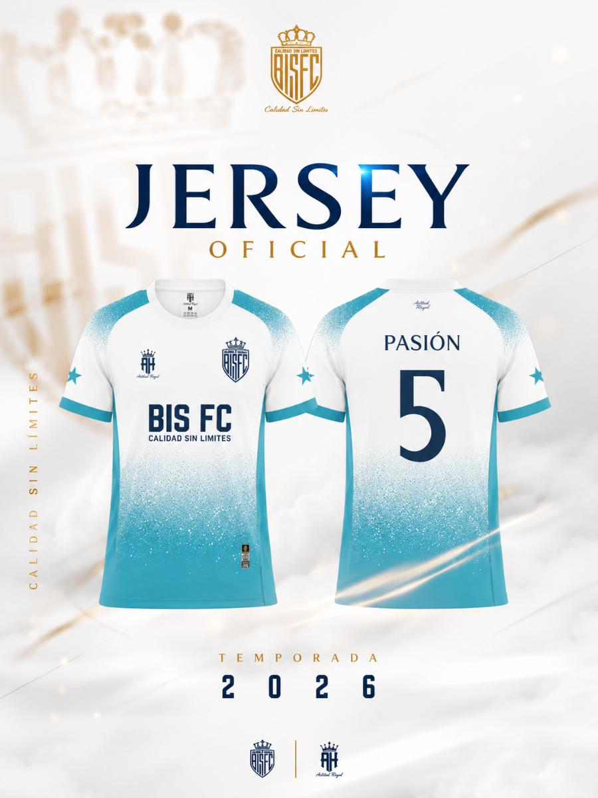

18 de julio de 2026
BIS F.C. JERSEY OFICIAL
Con enorme orgullo presentamos la primera indumentaria oficial que defenderá los colores de BIS F.C. en cada duelo y reto que nos depare el camino, Representa el nacimiento de un proyecto construido con juventud, y el sueño de demostrar desde el barrio también nacen grandes talentos. El color blanco representando la unión, la esperanza y la ambición de crecer día a día; el azul turquesa representa energía sin perder la esencia que nos identifica. Cada detalle de este diseño fue pensando para transmitir elegancia, personalidad y carácter. Porque vestir este escudo significa representar una familia, un barrio un sueño compartido. BIS F.C. ¡Calidad sin límites!